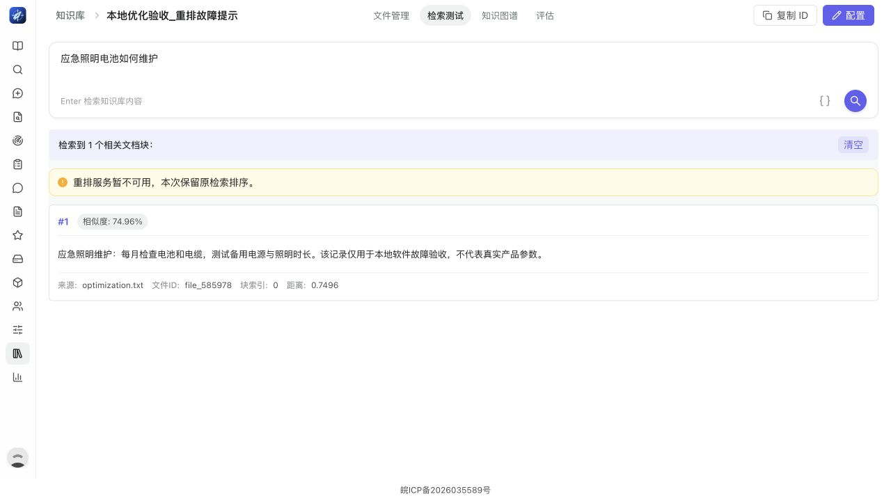
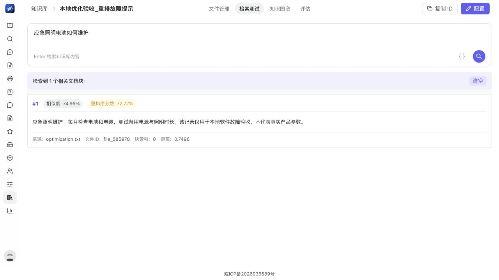

历史报告：2026-10-26 已按用户最新要求永久删除原云端业务数据及备份。当前整体迁移仅使用本地数据，查看最新迁移进度。
本地深度优化与云端撤除复核
2026-10-26 计数更正：原“2个版本”误数了接口对象的 run_id、versions 两个字段。已核对真实 versions 数组与 S5 冻结入选：6张独立正式画像、每张v1；查看复核证据。本页其余云端状态为10月25日历史记录，以新版迁移报告为准。
2026-10-25T21:04:07.515847+08:00
本地优化已复测；云端所有项目已撤除，尚未重新部署。迁移前等待业务数据来源选择。
当前云端状态
49.232.128.56：0容器、0 Compose项目，Nginx停止并禁用，活动部署目录已移除，项目端口关闭。
最新复查见 cloud-offline-release.log。
完整部署、业务数据、最新逻辑导出与独立文档数据保存在受保护目录
/var/backups/deepquest/offline-before-local-optimization-20261025。备份已校验，未删除历史备份。
待用户确认业务数据以本地、原云端或合并结果为准；两边资料数量不同，不默认覆盖。
cloud-removal-result.json
完成的优化
- 并发调用由20毫秒轮询改为跨线程与事件循环通知；释放、取消和扩容都会唤醒等待者。
- 学术回答仅接受当前轮次、匹配实际工具调用的真实来源；缺引用或摘要不足最多两轮纠正，仍不满足则失败。
- 明确要求公开技术证据时必须检索；遵循用户明确排除论文等渠道的限制。
- 重排失败保留原召回排序并显式提示降级，不再伪造0.5分；状态沿来源元数据传递到前端。
- 来源整理阶段进入供应商调用及计量；短阶段关闭隐藏推理，保留20秒上限。实际预算由返回元数据传递，原参数不再被污染。
- 后端历史lint从本轮1079项减至241项，新增问题门禁为零；前端CI增加只读lint。
真实页面故障与恢复
独立测试资料库触发重排服务失败，页面显示降级提示且保留召回结果：

恢复已开通重排模型后，真实分数显示，降级提示消失：

本轮临时故障资料库与验收身份已清理或禁用，见 ui-cleanup.log。
暂缓项和结论边界
- 协议主体与正式协议文本
- 阿里云模型
- MiniMax-M2.5开通
- Dify
- Notion
- 智谱外部知识库
- 云端当前没有项目运行，因此本报告不将历史云端验收计为当前新版云端复验。
- 完整研究耗时594秒，产生15169字报告和6张正式画像（每张v1）：98次模型调用成功、3次辅助来源请求超时，S5回退0次。
- 针对上述超时与阶段缺失的最终短探针3次成功，输入不同于原长请求，不能据此宣称所有长请求均已消除超时。
- 原并行维护规程Query被领域规则拒绝，未计通过；另一个明确设备能力Query真实生成并发布。
- 保留初次学术选路失败、旧重排断言失败、历史目录布局失败与原wrapper失败日志；修复及复测独立归档。
- 剩余241项历史lint和21项集成跳过项不计为已消除问题；测试通过不等于不存在任何漏洞。
- 源码包不含私有部署凭据和运行数据；迁移需另行迁移所选业务数据和受保护配置，PostgreSQL跨架构使用逻辑恢复。